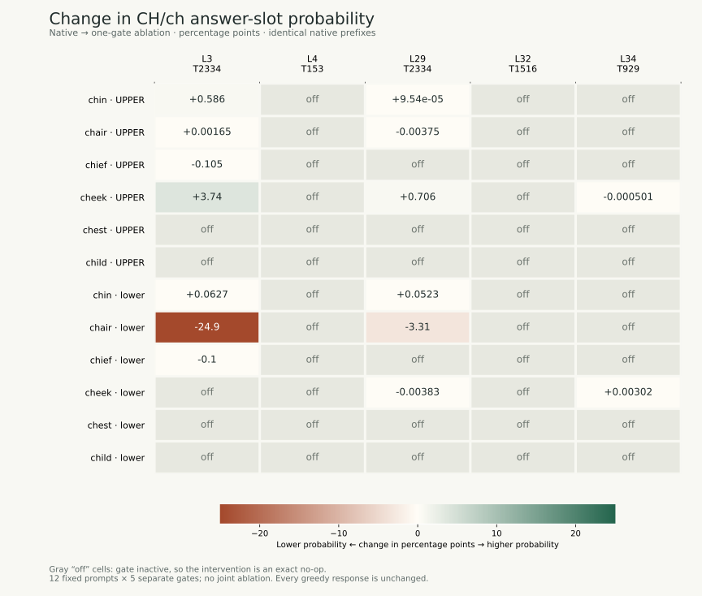
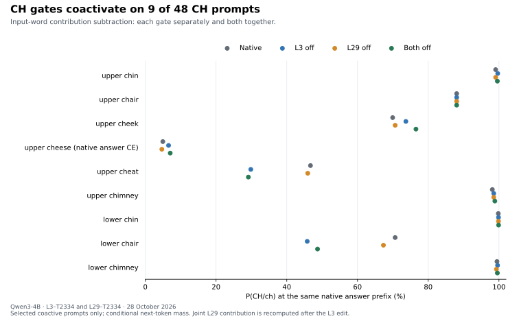

upper_chin
Give the first two letters of each word in uppercase. garden: GA window: WI table: TA chin:
28 October 2026 · Input-word ablation · Exploratory follow-up
We first removed five CH-related contributions separately. Then we checked coactivation across 64 prompts and compared removing L3, L29, or both on nine eligible CH prompts. Confidence effects varied; final answer letters stayed the same.
Initial study · five gates tested separately
The initial study reused 12 unique prompts across five single-feature interventions. Its 60 comparisons are not independent questions. The later coactivation-selected joint study is documented separately below.
The clearest effect
For the lowercase chair prompt, removing L3–T2334 lowered next-token P(ch) from 70.646% to 45.779% (−24.867 percentage points). The response remained ch.
Removing L29–T2334 separately lowered it to 67.334%. Uppercase cheek moved in the other direction: P(CH) increased under either of these removals.
Five isolated interventions
Labels describe the saved gate interpretation, not a proven function of the transform’s output. Active counts refer to the input word, at each transform’s own layer.
| Gate · rank | Saved label | Active prompts / 12 | Changed responses / 12 | Largest answer-slot decrease |
|---|---|---|---|---|
| L3-T2334rank 32 | Ch-Initial Word Onset | 7 | 0 | lower_chair: -24.866769 pp |
| L4-T153rank 256 | Substring “ch” or “new” | 0 | 0 | No-op on all 12 prompts |
| L29-T2334rank 32 | Initial “Ch” Word Onset | 6 | 0 | lower_chair: -3.312230 pp |
| L32-T1516rank 32 | Culinary and Proper Noun “Ch” Word Starts | 0 | 0 | No-op on all 12 prompts |
| L34-T929rank 64 | Bigram “ch” Prefix Gate | 2 | 0 | upper_cheek: -0.000501 pp |
Probability changes

Complete evidence · no omitted prompts
Some lowercase responses echo the word before answering. Choose first output to measure P(ch) directly after the prompt, or answer slot to compare after the same native prefix, such as chin:.
60 of 60 comparisons
Rust: lower probability · Green: higher probability · Gray: no-op
| Gate | Prompt | Gate status | Natural answer | Gate-off answer | Identical native prefix | Native P(%) | Gate-off P(%) | Change (pp) |
|---|---|---|---|---|---|---|---|---|
| L3-T2334 | chinupper | active editchin: 3.1561 | CH | CH | prompt alone | 99.062514 | 99.648726 | +0.586212 |
| L3-T2334 | chairupper | active editchair: 1.2830 | CH | CH | prompt alone | 88.040417 | 88.042068 | +0.001651 |
| L3-T2334 | chiefupper | active editchief: 1.7412 | CH | CH | prompt alone | 96.025145 | 95.920229 | -0.104916 |
| L3-T2334 | cheekupper | active editche: 1.1252 · ek: 0.0000 | CH | CH | prompt alone | 69.940299 | 73.676836 | +3.736538 |
| L3-T2334 | chestupper | inactive · no-opchest: 0.0000 | CH | CH | prompt alone | 99.137717 | 99.137717 | +0.000000 |
| L3-T2334 | childupper | inactive · no-opchild: 0.0000 | CH | CH | prompt alone | 99.319077 | 99.319077 | +0.000000 |
| L3-T2334 | chinlower | active editchin: 3.0498 | chin: ch | chin: ch | chin: | 99.811536 | 99.874264 | +0.062728 |
| L3-T2334 | chairlower | active editchair: 1.2245 | ch | ch | prompt alone | 70.646262 | 45.779493 | -24.866769 |
| L3-T2334 | chieflower | active editchief: 1.8639 | chief: ch | chief: ch | chief: | 99.221939 | 99.121952 | -0.099987 |
| L3-T2334 | cheeklower | inactive · no-opche: 0.0000 · ek: 0.0000 | cheek: ch | cheek: ch | cheek: | 99.971050 | 99.971050 | +0.000000 |
| L3-T2334 | chestlower | inactive · no-opchest: 0.0000 | chest: ch | chest: ch | chest: | 99.989098 | 99.989098 | +0.000000 |
| L3-T2334 | childlower | inactive · no-opchild: 0.0000 | child: ch | child: ch | child: | 99.969250 | 99.969250 | +0.000000 |
| L4-T153 | chinupper | inactive · no-opchin: 0.0000 | CH | CH | prompt alone | 99.062514 | 99.062514 | +0.000000 |
| L4-T153 | chairupper | inactive · no-opchair: 0.0000 | CH | CH | prompt alone | 88.040417 | 88.040417 | +0.000000 |
| L4-T153 | chiefupper | inactive · no-opchief: 0.0000 | CH | CH | prompt alone | 96.025145 | 96.025145 | +0.000000 |
| L4-T153 | cheekupper | inactive · no-opche: 0.0000 · ek: 0.0000 | CH | CH | prompt alone | 69.940299 | 69.940299 | +0.000000 |
| L4-T153 | chestupper | inactive · no-opchest: 0.0000 | CH | CH | prompt alone | 99.137717 | 99.137717 | +0.000000 |
| L4-T153 | childupper | inactive · no-opchild: 0.0000 | CH | CH | prompt alone | 99.319077 | 99.319077 | +0.000000 |
| L4-T153 | chinlower | inactive · no-opchin: 0.0000 | chin: ch | chin: ch | chin: | 99.811536 | 99.811536 | +0.000000 |
| L4-T153 | chairlower | inactive · no-opchair: 0.0000 | ch | ch | prompt alone | 70.646262 | 70.646262 | +0.000000 |
| L4-T153 | chieflower | inactive · no-opchief: 0.0000 | chief: ch | chief: ch | chief: | 99.221939 | 99.221939 | +0.000000 |
| L4-T153 | cheeklower | inactive · no-opche: 0.0000 · ek: 0.0000 | cheek: ch | cheek: ch | cheek: | 99.971050 | 99.971050 | +0.000000 |
| L4-T153 | chestlower | inactive · no-opchest: 0.0000 | chest: ch | chest: ch | chest: | 99.989098 | 99.989098 | +0.000000 |
| L4-T153 | childlower | inactive · no-opchild: 0.0000 | child: ch | child: ch | child: | 99.969250 | 99.969250 | +0.000000 |
| L29-T2334 | chinupper | active editchin: 2.4626 | CH | CH | prompt alone | 99.062514 | 99.062610 | +0.000095 |
| L29-T2334 | chairupper | active editchair: 0.6047 | CH | CH | prompt alone | 88.040417 | 88.036668 | -0.003749 |
| L29-T2334 | chiefupper | inactive · no-opchief: 0.0000 | CH | CH | prompt alone | 96.025145 | 96.025145 | +0.000000 |
| L29-T2334 | cheekupper | active editche: 1.9015 · ek: 0.0000 | CH | CH | prompt alone | 69.940299 | 70.646507 | +0.706208 |
| L29-T2334 | chestupper | inactive · no-opchest: 0.0000 | CH | CH | prompt alone | 99.137717 | 99.137717 | +0.000000 |
| L29-T2334 | childupper | inactive · no-opchild: 0.0000 | CH | CH | prompt alone | 99.319077 | 99.319077 | +0.000000 |
| L29-T2334 | chinlower | active editchin: 2.3920 | chin: ch | chin: ch | chin: | 99.811536 | 99.863791 | +0.052255 |
| L29-T2334 | chairlower | active editchair: 0.6471 | ch | ch | prompt alone | 70.646262 | 67.334032 | -3.312230 |
| L29-T2334 | chieflower | inactive · no-opchief: 0.0000 | chief: ch | chief: ch | chief: | 99.221939 | 99.221939 | +0.000000 |
| L29-T2334 | cheeklower | active editche: 1.9038 · ek: 0.0000 | cheek: ch | cheek: ch | cheek: | 99.971050 | 99.967217 | -0.003833 |
| L29-T2334 | chestlower | inactive · no-opchest: 0.0000 | chest: ch | chest: ch | chest: | 99.989098 | 99.989098 | +0.000000 |
| L29-T2334 | childlower | inactive · no-opchild: 0.0000 | child: ch | child: ch | child: | 99.969250 | 99.969250 | +0.000000 |
| L32-T1516 | chinupper | inactive · no-opchin: 0.0000 | CH | CH | prompt alone | 99.062514 | 99.062514 | +0.000000 |
| L32-T1516 | chairupper | inactive · no-opchair: 0.0000 | CH | CH | prompt alone | 88.040417 | 88.040417 | +0.000000 |
| L32-T1516 | chiefupper | inactive · no-opchief: 0.0000 | CH | CH | prompt alone | 96.025145 | 96.025145 | +0.000000 |
| L32-T1516 | cheekupper | inactive · no-opche: 0.0000 · ek: 0.0000 | CH | CH | prompt alone | 69.940299 | 69.940299 | +0.000000 |
| L32-T1516 | chestupper | inactive · no-opchest: 0.0000 | CH | CH | prompt alone | 99.137717 | 99.137717 | +0.000000 |
| L32-T1516 | childupper | inactive · no-opchild: 0.0000 | CH | CH | prompt alone | 99.319077 | 99.319077 | +0.000000 |
| L32-T1516 | chinlower | inactive · no-opchin: 0.0000 | chin: ch | chin: ch | chin: | 99.811536 | 99.811536 | +0.000000 |
| L32-T1516 | chairlower | inactive · no-opchair: 0.0000 | ch | ch | prompt alone | 70.646262 | 70.646262 | +0.000000 |
| L32-T1516 | chieflower | inactive · no-opchief: 0.0000 | chief: ch | chief: ch | chief: | 99.221939 | 99.221939 | +0.000000 |
| L32-T1516 | cheeklower | inactive · no-opche: 0.0000 · ek: 0.0000 | cheek: ch | cheek: ch | cheek: | 99.971050 | 99.971050 | +0.000000 |
| L32-T1516 | chestlower | inactive · no-opchest: 0.0000 | chest: ch | chest: ch | chest: | 99.989098 | 99.989098 | +0.000000 |
| L32-T1516 | childlower | inactive · no-opchild: 0.0000 | child: ch | child: ch | child: | 99.969250 | 99.969250 | +0.000000 |
| L34-T929 | chinupper | inactive · no-opchin: 0.0000 | CH | CH | prompt alone | 99.062514 | 99.062514 | +0.000000 |
| L34-T929 | chairupper | inactive · no-opchair: 0.0000 | CH | CH | prompt alone | 88.040417 | 88.040417 | +0.000000 |
| L34-T929 | chiefupper | inactive · no-opchief: 0.0000 | CH | CH | prompt alone | 96.025145 | 96.025145 | +0.000000 |
| L34-T929 | cheekupper | active editche: 2.1853 · ek: 0.0000 | CH | CH | prompt alone | 69.940299 | 69.939798 | -0.000501 |
| L34-T929 | chestupper | inactive · no-opchest: 0.0000 | CH | CH | prompt alone | 99.137717 | 99.137717 | +0.000000 |
| L34-T929 | childupper | inactive · no-opchild: 0.0000 | CH | CH | prompt alone | 99.319077 | 99.319077 | +0.000000 |
| L34-T929 | chinlower | inactive · no-opchin: 0.0000 | chin: ch | chin: ch | chin: | 99.811536 | 99.811536 | +0.000000 |
| L34-T929 | chairlower | inactive · no-opchair: 0.0000 | ch | ch | prompt alone | 70.646262 | 70.646262 | +0.000000 |
| L34-T929 | chieflower | inactive · no-opchief: 0.0000 | chief: ch | chief: ch | chief: | 99.221939 | 99.221939 | +0.000000 |
| L34-T929 | cheeklower | active editche: 2.1888 · ek: 0.0000 | cheek: ch | cheek: ch | cheek: | 99.971050 | 99.974066 | +0.003016 |
| L34-T929 | chestlower | inactive · no-opchest: 0.0000 | chest: ch | chest: ch | chest: | 99.989098 | 99.989098 | +0.000000 |
| L34-T929 | childlower | inactive · no-opchild: 0.0000 | child: ch | child: ch | child: | 99.969250 | 99.969250 | +0.000000 |
P sums the two single-token variants CH and CH, or ch and ch. This is conditional next-token probability, not the total probability of every possible full correct response. Small numerical changes are shown without a significance claim.
Give the first two letters of each word in uppercase. garden: GA window: WI table: TA chin:
Give the first two letters of each word in uppercase. garden: GA window: WI table: TA chair:
Give the first two letters of each word in uppercase. garden: GA window: WI table: TA chief:
Give the first two letters of each word in uppercase. garden: GA window: WI table: TA cheek:
Give the first two letters of each word in uppercase. garden: GA window: WI table: TA chest:
Give the first two letters of each word in uppercase. garden: GA window: WI table: TA child:
Give the first two letters of each word in lowercase. garden: ga window: wi table: ta chin:
Give the first two letters of each word in lowercase. garden: ga window: wi table: ta chair:
Give the first two letters of each word in lowercase. garden: ga window: wi table: ta chief:
Give the first two letters of each word in lowercase. garden: ga window: wi table: ta cheek:
Give the first two letters of each word in lowercase. garden: ga window: wi table: ta chest:
Give the first two letters of each word in lowercase. garden: ga window: wi table: ta child:
Second study · Coactivation checked before joint intervention
We preserved the original six words and expanded to 24 CH words plus eight non-CH controls, each in the same uppercase/lowercase few-shot task. Native coactivation selected the eligible prompts before any ablation outcomes were inspected.
Across the 48 CH prompts, L3–T2334 was active on 11, L29–T2334 on 28, and both on nine. Neither fired on the 16 non-CH control prompts. Both were active for uppercase chin, chair, cheek, cheese, cheat and chimney; and lowercase chin, chair and chimney. Both remained inactive on child.
Lowercase chair: P(ch) was 70.646% native → 45.779% with L3 off → 48.701% with both off. Every joint condition removed a nonzero contribution at both layers. L29 remained active downstream of the L3 edit in all nine cases.

| Prompt | Probability prefix | Native P(%) | L3 off P(%) | L29 off P(%) | Both off P(%) | Joint response |
|---|---|---|---|---|---|---|
upper_chin | prompt alone | 99.062514 | 99.648726 | 99.062610 | 99.549460 | CH |
upper_chair | prompt alone | 88.040417 | 88.042068 | 88.036668 | 88.037634 | CH |
upper_cheek | prompt alone | 69.940299 | 73.676836 | 70.646507 | 76.531571 | CH |
upper_cheese | prompt alone | 4.950118 | 6.570707 | 4.670160 | 7.042439 | CE |
upper_cheat | prompt alone | 46.702036 | 29.830247 | 45.928136 | 29.140958 | cheat: CH |
upper_chimney | prompt alone | 98.125613 | 98.526317 | 98.519742 | 98.843145 | CH |
lower_chin | chin: | 99.811536 | 99.874264 | 99.863791 | 99.895495 | chin: ch |
lower_chair | prompt alone | 70.646262 | 45.779493 | 67.334032 | 48.700592 | ch |
lower_chimney | chimney: | 99.443305 | 99.605370 | 99.280536 | 99.553061 | chimney: ch |
P sums plain and one-leading-space CH/ch single-token variants. Answer-slot scoring uses the exact same native continuation prefix in every condition. It does not measure the full probability of every correct response. Select first output to inspect format changes separately.
Responses: no final two-letter answer changed in the 27 comparisons. Uppercase cheat changed from CH to cheat: CH with L3 off and with both off, so its immediate-CH probability decrease coincides with an output-format change. The original model already answered uppercase cheese as CE and lowercase chip as ci; these baseline failures were retained. Baseline final-letter correctness was 46/48 CH prompts and 16/16 controls.
| Prompt | Condition | Native response | Edited response |
|---|---|---|---|
upper_chin | L3_off | CH | CH |
upper_chin | L29_off | CH | CH |
upper_chin | both_off | CH | CH |
upper_chair | L3_off | CH | CH |
upper_chair | L29_off | CH | CH |
upper_chair | both_off | CH | CH |
upper_cheek | L3_off | CH | CH |
upper_cheek | L29_off | CH | CH |
upper_cheek | both_off | CH | CH |
upper_cheese | L3_off | CE | CE |
upper_cheese | L29_off | CE | CE |
upper_cheese | both_off | CE | CE |
upper_cheat | L3_off | CH | cheat: CH |
upper_cheat | L29_off | CH | CH |
upper_cheat | both_off | CH | cheat: CH |
upper_chimney | L3_off | CH | CH |
upper_chimney | L29_off | CH | CH |
upper_chimney | both_off | CH | CH |
lower_chin | L3_off | chin: ch | chin: ch |
lower_chin | L29_off | chin: ch | chin: ch |
lower_chin | both_off | chin: ch | chin: ch |
lower_chair | L3_off | ch | ch |
lower_chair | L29_off | ch | ch |
lower_chair | both_off | ch | ch |
lower_chimney | L3_off | chimney: ch | chimney: ch |
lower_chimney | L29_off | chimney: ch | chimney: ch |
lower_chimney | both_off | chimney: ch | chimney: ch |
| Word | Upper L3 | Upper L29 | Lower L3 | Lower L29 |
|---|---|---|---|---|
chin | chin:3.1561 | chin:2.4626 | chin:3.0498 | chin:2.3920 |
chair | chair:1.2830 | chair:0.6047 | chair:1.2245 | chair:0.6471 |
chief | chief:1.7412 | chief:0.0000 | chief:1.8639 | chief:0.0000 |
cheek | che:1.1252 · ek:0.0000 | che:1.9015 · ek:0.0000 | che:0.0000 · ek:0.0000 | che:1.9038 · ek:0.0000 |
chest | chest:0.0000 | chest:0.0000 | chest:0.0000 | chest:0.0000 |
child | child:0.0000 | child:0.0000 | child:0.0000 | child:0.0000 |
church | church:0.0000 | church:0.0000 | church:0.0000 | church:0.0000 |
cheese | che:1.1252 · ese:0.0000 | che:1.9015 · ese:0.0000 | che:0.0000 · ese:0.0000 | che:1.9038 · ese:0.0000 |
chicken | ch:0.0000 · icken:0.0000 | ch:4.6752 · icken:0.0000 | ch:0.0000 · icken:0.0000 | ch:4.8532 · icken:0.0000 |
cherry | ch:0.0000 · erry:0.0000 | ch:4.6752 · erry:0.0000 | ch:0.0000 · erry:0.0000 | ch:4.8532 · erry:0.0000 |
chocolate | ch:0.0000 · ocolate:0.0000 | ch:4.6752 · ocolate:0.0000 | ch:0.0000 · ocolate:0.0000 | ch:4.8532 · ocolate:0.0000 |
choice | choice:0.0000 | choice:0.0000 | choice:0.0000 | choice:0.0000 |
change | change:0.0000 | change:0.0000 | change:0.0000 | change:0.0000 |
chain | chain:0.0000 | chain:0.0000 | chain:0.0000 | chain:0.0000 |
charge | charge:0.0000 | charge:0.0000 | charge:0.0000 | charge:0.0000 |
check | check:0.0000 | check:0.0000 | check:0.0000 | check:0.0000 |
chalk | chalk:0.0000 | chalk:1.3826 | chalk:0.0000 | chalk:1.2530 |
chase | ch:0.0000 · ase:0.0000 | ch:4.6752 · ase:0.0000 | ch:0.0000 · ase:0.0000 | ch:4.8532 · ase:0.0000 |
cheat | che:1.1252 · at:0.0000 | che:1.9015 · at:0.0000 | che:0.0000 · at:0.0000 | che:1.9038 · at:0.0000 |
chimney | ch:0.0000 · im:1.4052 · ney:0.0000 | ch:4.6651 · im:2.6011 · ney:0.0000 | ch:0.0000 · im:1.4035 · ney:0.0000 | ch:4.8532 · im:2.5975 · ney:0.0000 |
chapter | chapter:0.0000 | chapter:0.0000 | chapter:0.0000 | chapter:0.0000 |
chip | chip:0.0000 | chip:1.8548 | chip:0.0000 | chip:1.8332 |
choir | cho:0.0000 · ir:0.0000 | cho:3.0322 · ir:0.0000 | cho:0.0000 · ir:0.0000 | cho:2.9466 · ir:0.0000 |
chess | ch:0.0000 · ess:0.0000 | ch:4.6752 · ess:0.0000 | ch:0.0000 · ess:0.0000 | ch:4.8532 · ess:0.0000 |
ship | ship:0.0000 | ship:0.0000 | ship:0.0000 | ship:0.0000 |
shell | shell:0.0000 | shell:0.0000 | shell:0.0000 | shell:0.0000 |
share | share:0.0000 | share:0.0000 | share:0.0000 | share:0.0000 |
shore | shore:0.0000 | shore:0.0000 | shore:0.0000 | shore:0.0000 |
cat | cat:0.0000 | cat:0.0000 | cat:0.0000 | cat:0.0000 |
table | table:0.0000 | table:0.0000 | table:0.0000 | table:0.0000 |
peach | pe:0.0000 · ach:0.0000 | pe:0.0000 · ach:0.0000 | pe:0.0000 · ach:0.0000 | pe:0.0000 · ach:0.0000 |
school | school:0.0000 | school:0.0000 | school:0.0000 | school:0.0000 |
Token:value pairs refer to input-word positions. The shared initial che token has identical gates in uppercase cheek, cheese and cheat. In chimney, L3 activates on im rather than on the initial ch token.
Each layer subtracts its estimated current naturally gated contribution at every input token overlapping the target word. In the joint condition, L29’s gate and low-rank operator are recomputed downstream of the L3 edit. The L29 contribution is not frozen to its native value. Other positions at each edit boundary, native attention functions, generated tokens, other features and the native MLP remainder are preserved.
All 64 zero controls and all 12 earlier native baselines matched exactly. An independent CPU audit reconstructed 182 saved gate/operator/edit vector files; all BF16 edits matched exactly, all hooks were removed, and no Child-feature intervention was installed. The pinned model/MOLT revisions match the first study. This run used Python 3.11.14, PyTorch 2.14.0+cu126, Transformers 4.57.6 and an RTX 3090.
Effects vary by prompt and format. Coactivation is not sufficient to predict the direction of a contribution’s output effect. This selected-subset experiment does not establish absorption or general feature redundancy. Non-CH controls were scanned for activation only; no active norm-matched specificity intervention or full-layer reconstruction-fidelity study was performed.
What was changed
post_attention_layernorm. Standardize it with the released MOLT statistics.gate × ((z @ V) @ U) × output_std from that layer’s native raw MLP output. Compute the edit in FP32, then cast once to BF16.This preserves the native MLP reconstruction remainder. It is estimated-component subtraction, not complete replacement of a native MLP with a MOLT reconstruction.
Interpretation
The estimated L3–T2334 contribution affects confidence on some prompts, especially lowercase chair. Other effects are small or mixed. Every tested single-gate ablation preserves the native greedy response.
L4–T153 and L32–T1516 were inactive on every prompt. L34–T929 was active only on the che subtoken of cheek. Its answer-slot changes were below 0.004 percentage points.
This does not establish that CH information is absent, that these gates are generally unnecessary, or that another feature absorbs their function. The initial study had no joint ablation. The later joint follow-up tests coactive L3/L29 contributions, while active norm-matched specificity controls remain untested.
The 12 prompts are a small fixed set. Labels selected the candidates, full-layer reconstruction fidelity was not evaluated here, and the scan was not exhaustive. See the earlier investigation for its distinct all-layer screen and additional candidates.
Inspect or reuse
1cfa9a7208912126459214e8b04321603b3df60c081ce901b090b64aeecf9bc8709b57c10411e32aLayer and transform IDs are zero-based. The public exports contain the simple spelling prompts, complete short responses, probability summaries, and verification records. Full tensor traces, runtime logs, and provider receipts are retained in the private research backup.